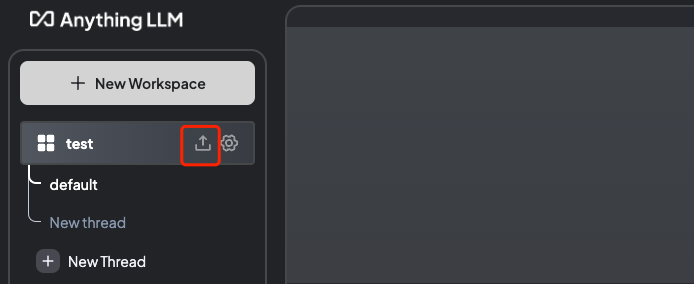

目前对LLM(Large Language Models，大语言模型)一无所知，万事开头难，虽然部署了，但并不知道原理，不过起码兴趣点上了，好歹以兴趣入手，搞一个私有的知识库倒是不错。
还是得Linux环境方便，Ollama和Anything LLM一起构成了我所要的知识库。Ollama应该是目前本地构建运行LLM最好的工具了，但我不仅是想本地构建，而且要是私人知识库，因此，嵌入自己的知识数据就是另一个重要的部分。以我目前粗浅的见识来看，Ollama给LLM嵌入数据还是需要其它工具协助的，Anything LLM正好符合我的要求。
Anything LLM有很好的易用性，而且还有开箱即用的RAG(检索增强生成，Retrieval-augmented Generation)、AI Agents(人工智能体)等工具。RAG生成模型结合了语言模型和信息检索技术，当模型需要生成信息时，它会从一个庞大的文档集合中检索相关数据，然后利用其生成对应的信息，从而提高预测的质量和准确性；AI Agents与传统的人工智能相比，可以通过调用工具逐步完成既定目标。
Ollama加Anything LLM的优点这么多，部署起来却一点也不难，前提是会使用Docker。以下是部署命令：
$ docker network create llm
$ docker run -d -ti --name ollama --network llm ollama/ollama
$ export STORAGE_LOCATION=$HOME/anythingllm && \
mkdir -p $STORAGE_LOCATION && \
chmod 777 $STORAGE_LOCATION && \
touch "$STORAGE_LOCATION/.env" && \
chmod 777 "$STORAGE_LOCATION/.env" && \
docker run -d -p 3001:3001 \
-e OPENAI_API_KEY=foo \
--network llm \
--name anythingllm \
--cap-add SYS_ADMIN \
-v ${STORAGE_LOCATION}:/app/server/storage \
-v ${STORAGE_LOCATION}/.env:/app/server/.env \
-e STORAGE_DIR="/app/server/storage" \
mintplexlabs/anythingllm:master
首先创建一个网络llm，让Ollama和Anything LLM们于同一网络，毕竟它们之间需要通信。Ollama的安装倒没什么可说的，Anything LLM的安装命令根据实际情况对官网的进行了一定修改。其中包含两个chmod命令，如果不加权限，可能由于Docker跟宿主系统用户不一致导致权限不足；另外-e OPENAI_API_KEY=foo这个是因为Anything LLM也支持选择openai，需要为它添加一个环境变量OPENAI_API_KEY，至于变量值如果不使用的话填一个非空值即可，这两个问题可能是导致Anything LLM运行异常的重要原因。
还有一个值得注意的是在Anything LLM界面选择模型运行工具时，选择Ollama填入的链接上填入http://ollama:11434，这个“域名”ollama就是Docker容器的名称。
至此，已经将本地的LLM部署完成，通过http://localhost:3001即可访问，通过上述的步骤即可看到以下界面。

上图红色方框的按钮用于上传个人文件，“训练”大模型，让其成为知识库，支持多种格式文件。除了界面外，Anything LLM还开放了API，便于企业对接嵌入内部数据，形成企业领域专用模型。
服务器性能不要太差喔。